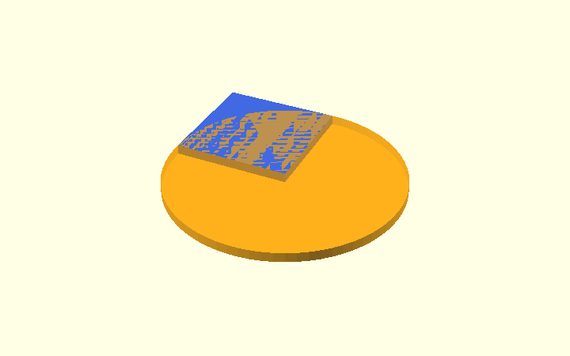
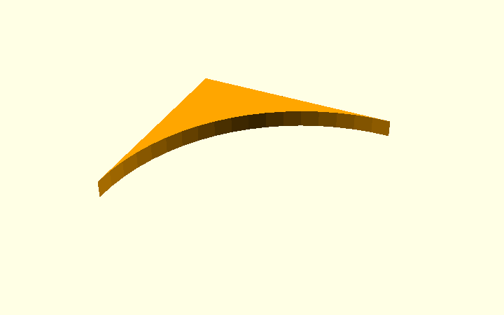
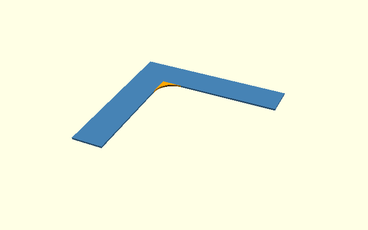
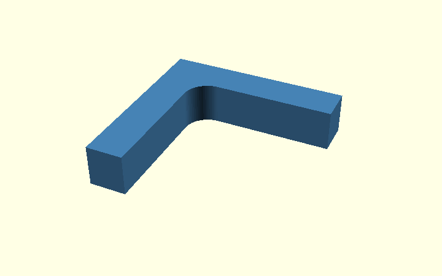
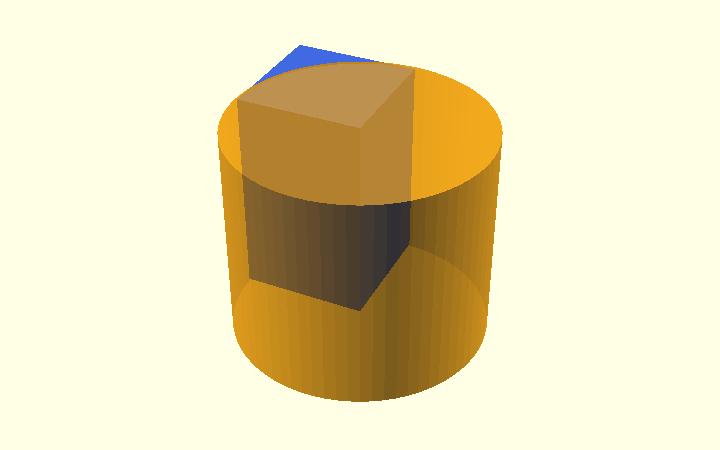
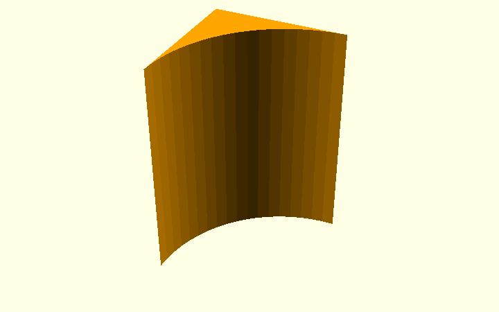

OpenSCAD polygons and rounded inside corners
A small L bracket is a useful way to learn the difference between drawing a
shape in 2D and building a solid in 3D. This article uses ordinary
OpenSCAD primitives—polygon(), square(), circle(), cube(), and
cylinder()—to make the same rounded concave corner in two ways.
Preferred approach for this bracket: start in 2D, then extrude. It is easier to see the intended side profile and keeps the boolean construction separate from thickness, nut pockets, and other 3D details. The 3D method is included to show how exactly the same idea works with solids.
The illustrations come from the standalone, editable
inside_corner_methods.scad. Select
demo_stage in the OpenSCAD Customizer to view each construction step.
The printable corner bracket now uses Method A (2D shapes). The 3D method and the former point-based approach are included here for comparison. The outside chamfers, nut pockets and elephant-foot relief remain separate, unchanged operations.
First: draw a simple L with polygon()
polygon() needs a list of coordinates. OpenSCAD joins them in order
and closes the outline. The inside corner is sharp at (0, 0).
openscad
module sharp_L_2d() {
polygon([
[0, 0], [armH, 0], [armH, wall],
[-wall, wall], [-wall, -armV], [0, -armV]
]);
}
Here, the demo uses wall = 18, armH = armV = 70 and radius = 12
millimetres, so the curved area is visible. The actual bracket defaults
to an inside radius of 2 mm.
Method A (recommended): ordinary 2D shapes, then extrude
A1. Place a square and a circle
The corner needs a little extra material in the empty quadrant next to
(0, 0). Place a radius × radius square at (0, -radius).
Place a circle with the same radius at (radius, -radius).

```openscad module corner_square_2d() { translate([0, -radius]) square([radius, radius]); }
module corner_circle_2d() { translate([radius, -radius]) circle(r = radius); } ```
Notice the difference between a quarter-circle and the material we actually need: the quarter-circle itself covers the wrong side of the curve. What we want to add is the small area in the square that lies outside the circle.
A2. Subtract the circle from the square
difference() keeps the square and removes anything the circle overlaps.
The result is a small curved triangular-looking piece.

openscad
module corner_piece_2d() {
difference() {
corner_square_2d();
corner_circle_2d();
}
}
A3. Add that piece to the L
union() combines the two filled 2D shapes. Only the inside corner
changes; the rest of the original L outline stays where it is.

openscad
module rounded_L_2d() {
union() {
sharp_L_2d();
corner_piece_2d();
}
}
A4. Give the 2D shape thickness
Once the 2D profile is correct, a single linear_extrude() turns
the complete outline into a 3D bracket-like solid.

openscad
module extruded_from_2d() {
linear_extrude(height = depth)
rounded_L_2d();
}
This is now the approach in scad/corner_bracket.scad: finish the
side profile in 2D, then extrude. In the real source, the module names
are sharp_profile(), inside_corner_2d(r) and profile(); the
teaching example uses slightly longer descriptive names.
Method B: build the same corner from 3D solids
The same construction works one dimension higher:
| 2D operation | Corresponding 3D operation |
|---|---|
square([r, r]) |
cube([r, r, depth]) |
circle(r = r) |
cylinder(r = r, h = depth) |
difference() in the plane |
difference() between solids |
union() of 2D areas |
union() of solids |
linear_extrude() once at the end |
Already working in 3D |
B1. Position a cube and a cylinder
The cube is placed where the 2D square was, and the cylinder is positioned at the circle's centre. Both cover the full intended depth of the bracket.

```openscad module corner_cube_3d() { translate([0, -radius, 0]) cube([radius, radius, depth]); }
module corner_cylinder_3d() { translate([radius, -radius, -epsilon]) cylinder(r = radius, h = depth + 2 * epsilon); } ```
The small epsilon extends the cutter beyond the cube at either end.
It prevents coincident top and bottom faces during the boolean operation;
it does not make the finished part thicker.
B2. Subtract the cylinder

openscad
module corner_piece_3d() {
difference() {
corner_cube_3d();
corner_cylinder_3d();
}
}
B3. Add the result to an extruded L
openscad
module rounded_L_3d() {
union() {
linear_extrude(height = depth)
sharp_L_2d();
corner_piece_3d();
}
}
Both methods are intended to produce the same solid, with the same radius, depth and circle segmentation. Method A is shorter to reason about because the round corner is settled before anything becomes 3D.
What did the original point-based polygon method do?
The earlier version of the bracket constructed its corner by calculating
19 points along a quarter-circle and putting those vertices
directly into one polygon() outline. That version was replaced in
PR #10 by the simpler 2D square-minus-circle approach.
```openscad corner_arc = (r_in > 0) ? [for (a = [180 : -5 : 90]) [r_in + r_in * cos(a), -r_in + r_in * sin(a)]] : [[0, 0]];
// This is historical/reference code; the current model uses // sharp_profile() plus inside_corner_2d(r_in) in profile(). ```
This approach is not wrong. It is especially useful when a profile
must be expressed as a single ordered list of vertices, or when control
over the individual segments matters. But for learning and for this
local rounded corner, square() - circle() + union() is easier
to understand and modify.
The 2D method uses $fn = 72 for the corner circle: one segment
per 5°, exactly like the former 19-point quarter-arc. We compared
OpenSCAD STL meshes from the original and updated implementation
across the default and several parameter combinations. They had
matching vertices, face centres, and bounding boxes, with only
floating-point-level volume differences. Physical fitting and print
verification are still required.
A third compact option: two offsets
A 2D offset() pair can round concave corners too:
openscad
offset(r = -radius)
offset(r = radius)
sharp_L_2d();
It is short, but operates on the whole outline. It can therefore affect other narrow details or chamfered ends. The square-minus-circle method changes only the chosen corner, which is why it is the clearer demonstration for the existing corner bracket.
2D first or 3D first?
Use 2D first when the cross-section can be drawn with rectangles, circles and polygons, and remains the same along the thickness. Use 3D first when depth changes locally or a hole, recess or other feature needs a genuine volume subtraction. For this model, it is reasonable to combine them: make the L and the inside radius in 2D, extrude, then subtract the 3D nut pockets and print-relief cutters.
The production corner radius now uses the 2D square-minus-circle construction. The alternative 3D solid method and legacy point-list polygon are provided for learning. The change preserves the outside chamfers, bolt and nut features, and elephant-foot cutters; final print fit and mechanical strength still require physical testing.